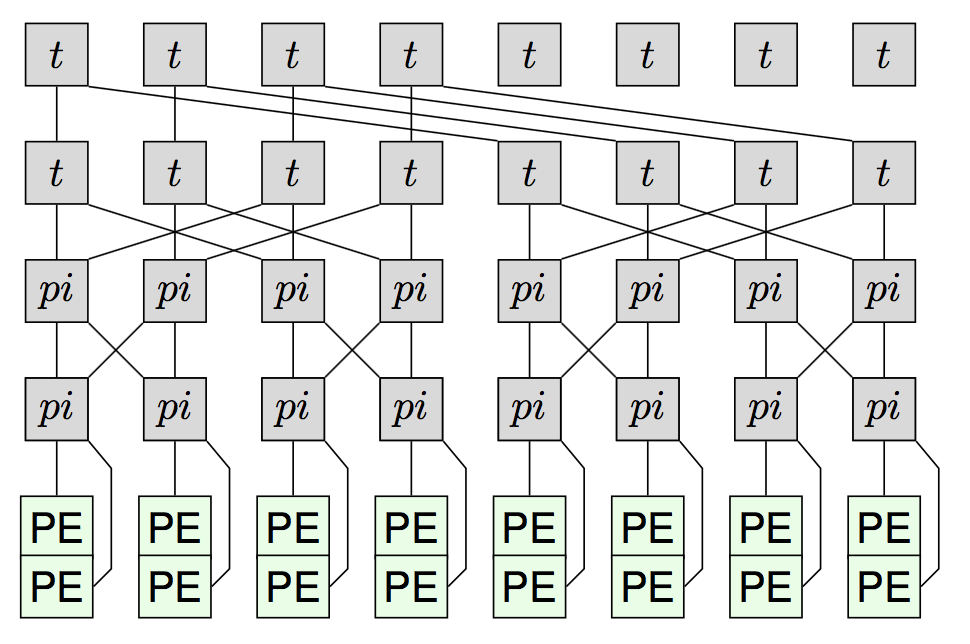
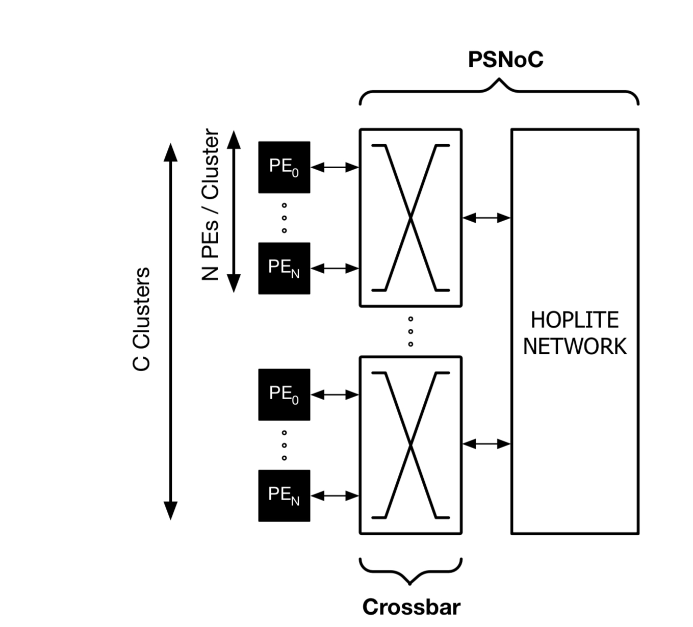
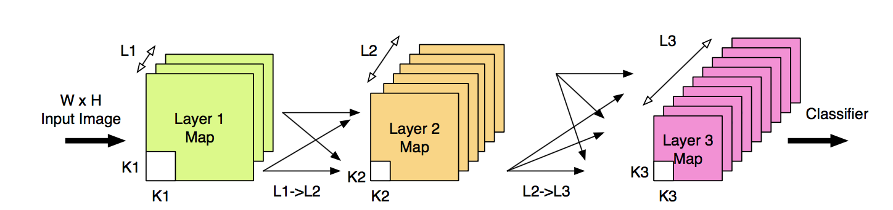
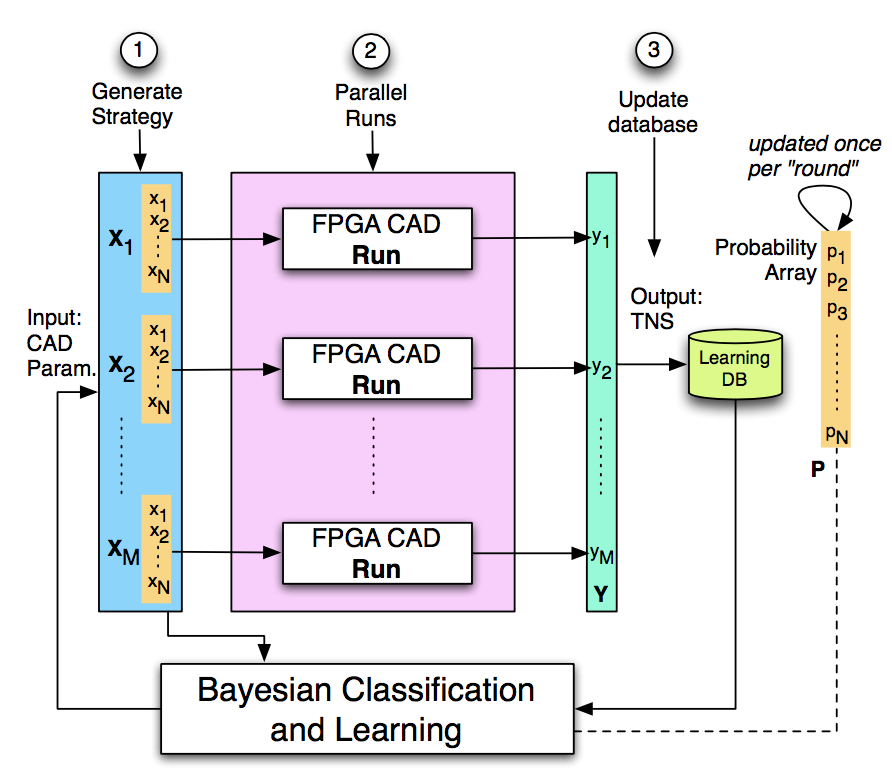

Main | CV | Research | Teaching | Awards
In the Waterloo Configurable Architectures Group (WatCAG), we are broadly interested in understanding and exploiting the potential of spatial parallelism for implementing computation using reconfigurable architectures such as FPGAs. Reconfigurable computing has come of age through major industry investment, Altera’s return to operational independence, and the rapid adoption of FPGAs by cloud providers including Microsoft, Amazon, Huawei, Baidu, and Alibaba. With the rising computing demands of machine-learning workloads and the slowing of Moore’s Law, this is an especially exciting time to work in the field.
In the WatCAG group, we ask the following big questions:
The group has investigated the design and engineering of token dataflow overlays, vector processor characterization, embedded system evaluation, real-time systems, and FPGA-specific network-on-chip architectures for use in accelerators.

Token dataflow architectures exploit application parallelism dynamically at the granularity of individual instructions. Each instruction implements a dataflow firing rule that replaces the program counter used in conventional sequential CPU processing. Data dependencies are routed over an operand-routing network-on-chip to move data rapidly to parallel compute blocks within the chip. The design and engineering of hardware-friendly dataflow building blocks for FPGAs have been a focus of our group.

We are excited about novel uses of FPGAs in emerging application scenarios in both cloud and embedded contexts. The group has published papers on machine learning, geophysical modelling, and computer vision.

The group has developed various automation tools, compiler passes, and frameworks for use with FPGAs. In particular, we have tools to perform precision analysis, performance tuning, and machine-learning-driven FPGA compilation, among other tasks.
